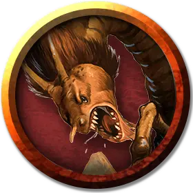

Неоги повелитель
Neogi Master
Средняя Аберрация, законно-злая

Класс Доспеха 15 (природный доспех)
Хиты 71 (11к8 + 22)
Скорость 30 футов, лазая 30 футов
| мод | спас | ||
|---|---|---|---|
| СИЛ | 6 | −2 | −2 |
| ЛОВ | 16 | +3 | +3 |
| ТЕЛ | 14 | +2 | +2 |
| мод | спас | ||
|---|---|---|---|
| ИНТ | 16 | +3 | +3 |
| МДР | 12 | +1 | +3 |
| ХАР | 18 | +4 | +4 |
Навыки Восприятие +3, Запугивание +6, Магия +5, Обман +6, Убеждение +6
Чувства тёмное зрение 120 футов (прозревает магическую тьму), пассивное Восприятие 13
Языки Общий, Глубинная речь, Подземный, Телепатия 30 фт.
Опасность 4 (1100 опыта)
Бонус мастерства +2
Среда обитания Подземье, Холмы
Особенности
Ментальная стойкость. . Неоги имеет преимущество на спасброски от очарования и испуга, и его нельзя усыпить магически.
Использование заклинаний. . Неоги является заклинателем 7-го уровня. Его базовой характеристикой является Харизма (Сл спасброска от заклинаний 14, +6 к попаданию заклинаниями). Он восстанавливает все ячейки после завершения короткого или продолжительного отдыха. Он знает следующие заклинания колдуна:
• Заговоры (неограниченно): мистический заряд [eldritch blast] (дистанция 300 футов, +4 бонус к каждому броску урона), указание [guidance], волшебная рука [mage hand], малая иллюзия [minor illusion], фокусы [prestidigitation], злая насмешка [vicious mockery].
• 1–4 уровень (2 ячейки 4-го уровня): руки Хадара [arms of Hadar], контрзаклинание [counterspell], переносящая дверь [dimension door], ужас [fear], удержание личности [hold person], голод Хадара [hunger of Hadar], невидимость [invisibility], невидимый слуга [unseen servant].
Паучья ходьба. Неоги может взбираться по сложным поверхностям, включая вверх ногами по потолку, без необходимости проходить проверки.
Действия
Мультиатака. Неоги совершает две атаки: одну укусом и одну когтями.
Укус. . Рукопашная атака оружием: +5 к попаданию, досягаемость 5 футов, одна цель. Попадание: 6 (1к6 + 3) колющего урона плюс 14 (4к6) урона ядом, и цель должна успешно пройти спасбросок Телосложения Сл 12 или стать отравленной на 1 минуту. Цель может повторять спасбросок в конце каждого своего хода и окончить этот эффект на себе при успехе.
Когти. . Рукопашная атака оружием: +5 к попаданию, досягаемость 5 футов, одна цель. Попадание: 8 (2к4 + 3) колющего урона.
Порабощение (Перезаряжается после короткого или продолжительного отдыха). . Неоги выбирает целью одно существо, которое может видеть, не далее 30 футов от себя. Цель должна успешно пройти спасбросок Мудрости Сл 14 или стать магически очарованной неоги на 1 день или пока неоги не умрет или не будет находится дальше, чем на 1 милю от цели. Очарованная цель подчиняется командам неоги и не может совершать реакции, неоги и цель могут общаться телепатически друг с другом на расстоянии до 1 мили. Когда очарованная цель получает урон она повторяет спасбросок и оканчивает этот эффект на себе при успехе.
Описание
См. дополнительно статью: "Бестиарий: Неоги"